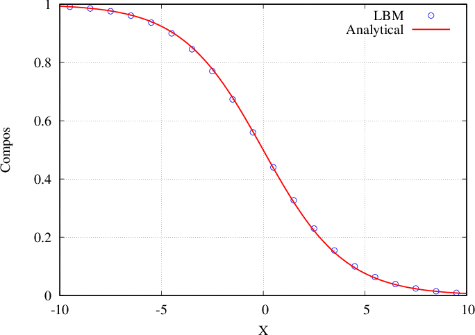
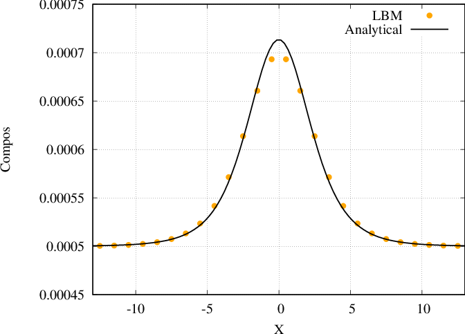
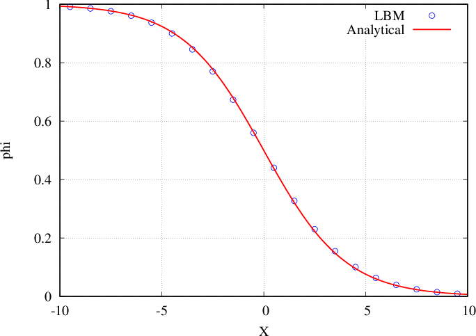
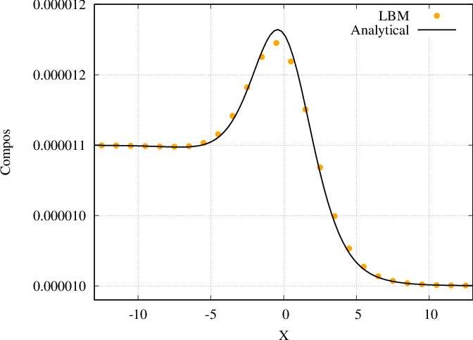
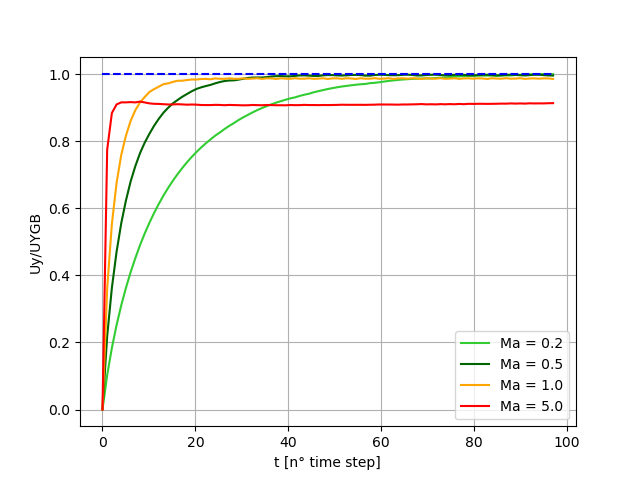

Run “Two-phase with fluid flows with composition effect”
Surfactant
Warning
The test cases of folder run_training_lbm/TestCase15_Surfactant run with problem NSAC_Surfactant. LBM_Saclay must be compiled with that kernel for running the test cases described below. The mathematical model is described on Model of Navier-Stokes/CAC with surfactant.
Analytical solution 1: same value of equilibrium composition for each phase
The analytical solutions for \(\phi\) and \(c\) are implemented inside a gnuplot script profile_test.gnu. First run LBM_Saclay with the input datafile profile_test.ini.
For LBM training session: run the first test case
$ cd TestCase15_Surfactant/Analytical_Profile1 $ sbatch /tmpformation/LBM_Saclay/JOB_H100_Surfactant.slurm profile_test.ini
Once your files are downloaded on your local desktop, post-process the LBM_Saclay results with paraview12 to obtain the profile.
For LBM training session: post-process with paraview 5.12
Post-process with paraview12
Open
surf_profile_FINAL.vtiCell Data to Point Dataplot over lineclic onx-axisandSample at Segment CentersandApplyClic on
File–>Save Data. File name:profile_num.csv. Clic onChoose Arrays to writeand select onlycompositionandphiIn your terminal Write
$ gnuplot profile_test.gnu
{kind=link}

Fig. 24 Phase-field profile
{kind=link}

Fig. 25 Composition profile
Analytical solution 2: different values
The analytical solutions for \(\phi\) and \(c\) are implemented inside a gnuplot script profile_test.gnu. First run LBM_Saclay with the input datafile profile_test.ini.
For LBM training session: run the first test case
$ cd TestCase15_Surfactant/Analytical_Profile2 $ sbatch /tmpformation/LBM_Saclay/JOB_H100_Surfactant.slurm profile_2.ini
Once your files are downloaded on your local desktop, post-process the LBM_Saclay results with paraview12 to obtain the profile.
For LBM training session: post-process with paraview 5.12
Post-process with paraview12
Open
surf_profile_FINAL.vtiCell Data to Point Dataplot over lineclic onx-axisandSample at Segment CentersandApplyClic on
File–>Save Data. File name:profile_2_num.csv. Clic onChoose Arrays to writeand select onlycompositionandphiIn your terminal Write
$ gnuplot profile_2_num.gnu
{kind=link}

Fig. 26 Phase-field profile
{kind=link}

Fig. 27 Composition profile
Coalescence of two bubbles
For LBM training session: run LBM_Saclay on Orcus
Go to folder and run
$ cd TestCase15_Surfactant/Coalescence
$ sbatch /tmpformation/LBM_Saclay/JOB_H100_Surfactant.slurm TestCaseCoalescenceWithSurf.ini
The simulation ran 59.808 seconds on partition gpuq_h100 of Orcus to achieve 70.001 time-steps.
For LBM training session: post-processing with paraview 5.11
Post-process with paraview11
$ paraview11&
In paraview: open all .vti files.
For LBM training session: Exercise
Compare without surfactant TestCaseCoalescenceNoSurf.ini. The simulation ran 40.485 seconds on partition gpuq_h100 of Orcus to achieve 50.001 time-steps. After post-processing with paraview, you should obtain the video below.
Falling droplet
For LBM training session: run LBM_Saclay on Orcus
Go to folder and run
$ cd TestCase15_Surfactant/Falling-Droplet
$ sbatch /tmpformation/LBM_Saclay/JOB_H100_Surfactant.slurm TestCase_RP_surf.ini
The simulation ran 281.409 seconds on partition gpuq_h100 of Orcus to achieve 500.001 time-steps.
For LBM training session: post-processing with paraview 5.11
Post-process with paraview11
$ paraview11&
In paraview: open file TestCase10_Rayleigh-PlateauSurf.xmf, select XDMF Reader file and OK.
Other examples
Effect on density
Marangoni flow
{kind=link}

Fig. 28 Thermocapillary drop migration: effect of Marangoni number
Section author: Alain Cartalade